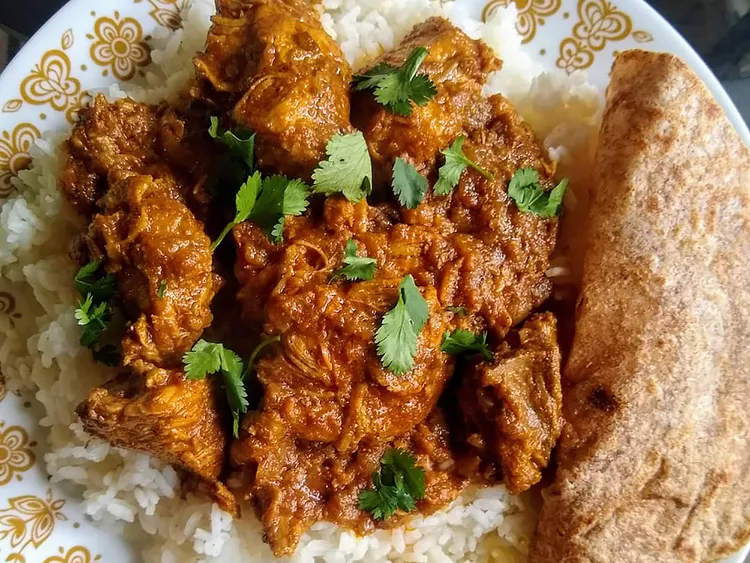

Indian Chicken Curry (Murgh Kari)

How to Store Chicken Curry
Leftover chicken curry can be refrigerated in a sealed container and enjoyed for two to four days. Freezing
extends the time to two months — simply thaw and gently reheat in the microwave or on the stovetop.
- 2 pounds skinless, boneless chicken breast halves
- 2 teaspoons salt
- 1 tablespoon minced garlic
- Gather all ingredients.
- Sprinkle the chicken breasts with 2 teaspoons salt.
- Heat oil in a large skillet over high heat; partially cook the chicken in the hot oil in batches until
completely browned on all sides. Transfer browned chicken breasts to a plate and set aside.